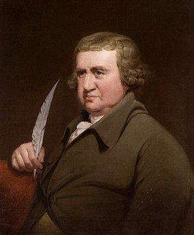

Erasmus Darwin
Erasmus Darwin (12 de diciembre de 1731 - 18 de abril de 1802) fue un estudioso del lenguaje humano, médico, naturalista, fisiólogo y filósofo británico, que escribió profusamente sobre temas de medicina y botánica, además de libros de poesía. Fue uno de los miembros fundadores de la Sociedad Lunar, un grupo de discusión de industriales y filósofos de la naturaleza. Abuelo paterno de Charles Darwin, fue uno de los defensores pioneros del evolucionismo.
En ciencias naturales
El trabajo científico más importante de Erasmus Darwin es Zoonomia (1794), que contiene un sistema de patología y un tratado sobre la «generación» en el que enuncia la existencia de un antepasado común a toda la vida, adelantándose así a las posturas transformistas de Jean-Baptiste Lamarck, e incluso a la postura evolucionistas de su nieto.
Darwin experimentó con el uso de aire y gases para calmar infecciones y el cáncer. Más tarde, enfocó sus hallazgos a la investigación sobre la formación de las nubes.
Los experimentos de Darwin en galvanismo fueron una importante fuente de inspiración para la novela de Frankenstein, de Mary Shelley.